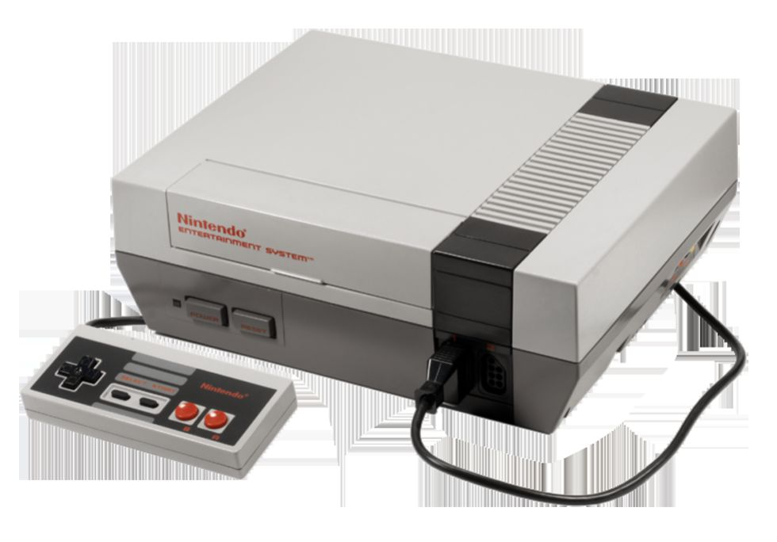

A lo largo de las décadas, los videojuegos han experimentado una evolución significativa en términos de gráficos, tecnología, jugabilidad y alcance. Algunos hitos importantes en la evolución de los videojuegos incluyen: 1. Consolas domésticas: A partir de la década de 1970, con consolas como la Atari 2600, se popularizaron los videojuegos en los hogares. Esto permitió a los jugadores disfrutar de una amplia variedad de títulos desde la comodidad de sus casas. 2. Avances tecnológicos: La introducción de gráficos en 3D, CD-ROM, DVD y la conectividad a internet ha permitido a los desarrolladores crear mundos virtuales cada vez más realistas y complejos. 3. Juegos móviles: La llegada de los teléfonos inteligentes y las tabletas ha revolucionado la industria de los videojuegos, permitiendo a los jugadores disfrutar de juegos en cualquier lugar y en cualquier momento. 4. Realidad virtual (VR) y aumentada (AR): La tecnología VR y AR ha llevado la experiencia de juego a un nivel completamente nuevo al permitir a los jugadores sumergirse en entornos virtuales y mezclar el mundo real con elementos digitales. 5. Juegos en línea y multijugador: Los juegos en línea han permitido a los jugadores competir y colaborar con personas de todo el mundo, creando comunidades virtuales vibrantes y activas. 6. Industria multimillonaria: Hoy en día, la industria de los videojuegos es una de las más grandes del mundo, generando miles de millones de dólares en ingresos y atrayendo a una audiencia diversa y global. En resumen, la evolución de los videojuegos ha sido impresionante, pasando de simples juegos en blanco y negro a experiencias interactivas inmersivas y complejas que abarcan una amplia gama de géneros y plataformas. La innovación tecnológica continúa impulsando el desarrollo de nuevos juegos y experiencias que desafían las fronteras de la creatividad y la imaginación. |
 |
Década de 1950: Se desarrollan los primeros videojuegos, como "Tennis for Two" y "Spacewar!" en computadoras universitarias. Década de 1970: Se lanzan las primeras consolas de videojuegos, como la Magnavox Odyssey y la Atari 2600, popularizando los videojuegos en los hogares. Década de 1980: Se produce el auge de los arcades y se lanzan clásicos como Pac-Man, Super Mario Bros. y Tetris. Década de 1990: Se introducen los gráficos en 3D con consolas como la PlayStation y la Nintendo 64, y se popularizan los juegos de rol (RPG) y los juegos de disparos en primera persona (FPS). Década de 2000: Se lanzan consolas de nueva generación como la Xbox 360, la PlayStation 3 y la Wii, y se expande el mercado de los juegos móviles con la llegada de los smartphones. Década de 2010: Se popularizan los juegos en línea y multijugador, así como la realidad virtual (VR) y aumentada (AR), con títulos como Fortnite, Minecraft y Pokémon GO. Década actual (2020 en adelante): Continúa la evolución de la tecnología en los videojuegos, con un enfoque en la accesibilidad, la inclusividad y la innovación en experiencias de juego únicas. Esta línea de tiempo destaca algunos hitos importantes en la evolución de los videojuegos a lo largo de las décadas, mostrando cómo han pasado de ser simples juegos a una industria multimillonaria con una amplia variedad de géneros, plataformas y experiencias para los jugadores.
|